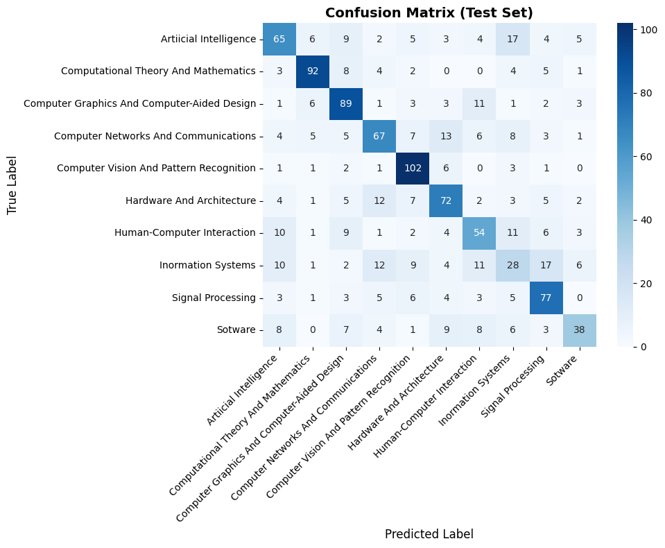

Machine Learning · Text Classification
จำแนกบทความวิชาการ
ด้วย SPECTER2 + MLP
ทดลองใช้เวกเตอร์แทนความหมายของชื่อเรื่องและบทคัดย่อ เพื่อจำแนกบทความออกเป็น 10 สาขาคอมพิวเตอร์ พร้อมประเมินผลบนชุดข้อมูลที่กันไว้สำหรับทดสอบ
5,498จากข้อมูลตั้งต้น 6,000 แถว
10แบ่งคลาสจาก subject
0.6079เฉลี่ยคะแนน F1 ทุกคลาส
60.42%ดีที่สุดจาก GridSearchCV
แนวทางการทดลอง
ตั้งแต่เตรียมข้อมูลจนถึงการวัดผลโมเดล
01 · DATAรวม CSV 10 ไฟล์
ลบ title ซ้ำ
ลบ title ซ้ำ
02 · FEATURESSPECTER2 สร้างเวกเตอร์ 768 มิติ
03 · SPLITTrain 70% · Validation 10% · Test 20%
04 · TRAINGrid search 36 ชุดพารามิเตอร์ · 3 folds
สัดส่วนข้อมูล
Train3,848 · 70%
Validation550 · 10%
Test1,100 · 20%
พารามิเตอร์ที่ได้คะแนนดีที่สุด
Hidden layer(100,)
Activationtanh
Alpha0.01
Learning rate0.001
คะแนนประเมิน
เปรียบเทียบ Validation และ Test
แถบด้านบนแสดงคะแนน Validation · คะแนน Test: Accuracy 62.18% · Precision 61.18% · Recall 61.15% · F1-score 60.79%
ผลแยกตามสาขา
Classification report บน Test set จำนวน 1,100 รายการ
| สาขาวิชา | Precision | Recall | F1-score | จำนวน |
|---|---|---|---|---|
| Artificial Intelligence | 0.60 | 0.54 | 0.57 | 120 |
| Computational Theory and Mathematics | 0.81 | 0.77 | 0.79 | 119 |
| Computer Graphics and Computer-Aided Design | 0.64 | 0.74 | 0.69 | 120 |
| Computer Networks and Communications | 0.61 | 0.56 | 0.59 | 119 |
| Computer Vision and Pattern Recognition | 0.71 | 0.87 | 0.78 | 117 |
| Hardware and Architecture | 0.61 | 0.64 | 0.62 | 113 |
| Human-Computer Interaction | 0.55 | 0.53 | 0.54 | 101 |
| Information Systems | 0.33 | 0.28 | 0.30 | 100 |
| Signal Processing | 0.63 | 0.72 | 0.67 | 107 |
| Software | 0.64 | 0.45 | 0.53 | 84 |
คะแนนรายคลาสปัดเศษสองตำแหน่งตามรายงานจากโน้ตบุ๊ก
Confusion matrix
แถวคือคลาสจริง · คอลัมน์คือคลาสที่โมเดลทำนาย

ภาพนำมาจากผลลัพธ์ที่บันทึกไว้ใน MODELMLP.ipynb